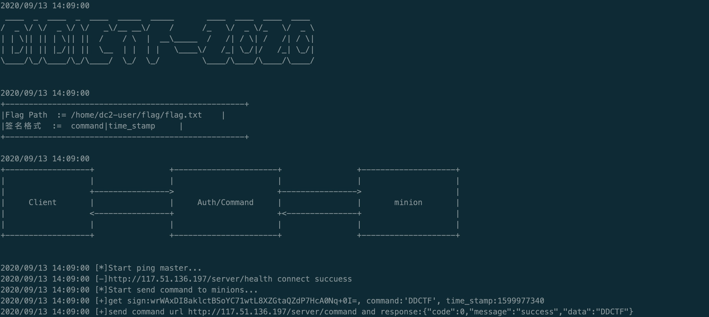
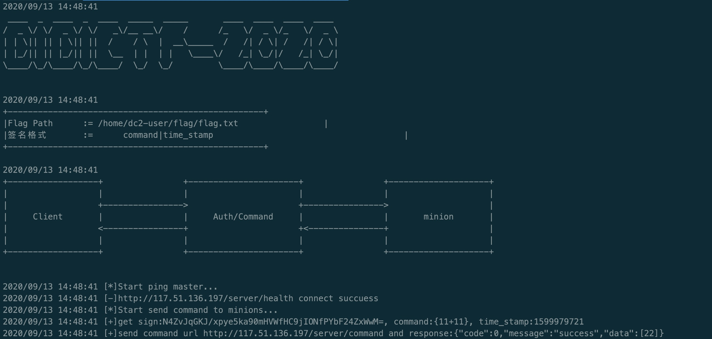

<!DOCTYPE html><html lang="en"><head><meta http-equiv="content-type" content="text/html; charset=utf-8"><meta content="width=device-width, initial-scale=1.0, maximum-scale=1.0, user-scalable=0" name="viewport"><meta content="yes" name="apple-mobile-web-app-capable"><meta content="black-translucent" name="apple-mobile-web-app-status-bar-style"><meta content="telephone=no" name="format-detection"><meta name="description" content=""><title>DDCTF-2020WEB出题记录 | Kevinsa</title><link rel="stylesheet" type="text/css" href="/css/style.css?v=0.0.0"><link rel="stylesheet" type="text/css" href="//cdn.jsdelivr.net/npm/normalize.css/normalize.min.css"><link rel="stylesheet" type="text/css" href="//cdn.jsdelivr.net/npm/purecss/build/pure-min.min.css"><link rel="stylesheet" type="text/css" href="//cdn.jsdelivr.net/npm/purecss/build/grids-responsive-min.css"><link rel="stylesheet" href="//cdn.jsdelivr.net/npm/font-awesome@4.7.0/css/font-awesome.min.css"><script type="text/javascript" src="//cdn.jsdelivr.net/npm/jquery/dist/jquery.min.js"></script><link rel="icon" mask="" sizes="any" href="/favicon.ico"><link rel="Shortcut Icon" type="image/x-icon" href="/favicon.ico"><link rel="apple-touch-icon" href="/apple-touch-icon.png"><link rel="apple-touch-icon-precomposed" href="/apple-touch-icon.png"><script type="text/javascript" src="//cdn.jsdelivr.net/npm/clipboard/dist/clipboard.min.js"></script><script type="text/javascript" src="//cdn.jsdelivr.net/gh/codeseven/toastr/build/toastr.min.js"></script><link rel="stylesheet" href="//cdn.jsdelivr.net/gh/codeseven/toastr/build/toastr.min.css"><meta name="generator" content="Hexo 5.2.0"></head><body><div class="body_container"><div id="header"><div class="site-name"><h1 class="hidden">DDCTF-2020WEB出题记录</h1><a id="logo" href="/.">Kevinsa</a><p class="description">When you bring me out, can you introduce me as Joker?</p></div><div id="nav-menu"><a class="current" href="/."><i class="fa fa-home"> Home</i></a><a href="/archives/"><i class="fa fa-archive"> Archive</i></a><a href="/about/"><i class="fa fa-user"> About</i></a></div></div><div class="pure-g" id="layout"><div class="pure-u-1 pure-u-md-3-4"><div class="content_container"><div class="post"><h1 class="post-title">DDCTF-2020WEB出题记录</h1><div class="post-meta">2020-09-12<span> | </span><span class="category"><a href="/categories/CTF/">CTF</a></span></div><div class="post-content"><h2 id="0x00-概述"><a href="#0x00-概述" class="headerlink" title="0x00 概述"></a><a href="#0x00-%E6%A6%82%E8%BF%B0" title="0x00 概述"></a>0x00 概述</h2><p>去年DDCTF-2019给出的题目是PHP 越权、Bypass black list、模版注入、文件读取漏洞的题目，而今年想了想决定出一道Java+Golang无符号逆向的题目，定位还是相对基础简单的漏洞利用分值只有150分，最后只有43位同学占比6%顺利做出这道题目。WriteUp可以参考<a target="_blank" rel="noopener" href="https://mp.weixin.qq.com/s/bdY30Kol91rD0Y4i74PQ0A">滴滴安全应急响应中心公众号</a></p>
<p>题目：请从服务端获取client，利用client获取flag，server url:<a target="_blank" rel="noopener" href="http://117.51.136.197/hint/1.txt">http://117.51.136.197/hint/1.txt</a><br>CTF利用链路  </p>
<ul>
<li>  Server:JWT错误使用</li>
<li>  Client:Golang二进制中密钥key获取</li>
<li>  Server:SpEL</li>
</ul>
<h2 id="0x01-CTF环境"><a href="#0x01-CTF环境" class="headerlink" title="0x01 CTF环境"></a><a href="#0x01-CTF%E7%8E%AF%E5%A2%83" title="0x01 CTF环境"></a>0x01 CTF环境</h2><p>因为涉及Server端的命令执行漏洞，所以环境部署相对谨慎</p>
<ul>
<li>  docker-compose部署做水平扩展</li>
<li>nginx 负责均衡、health_check   <figure class="highlight plain"><table><tr><td class="gutter"><pre><span class="line">1</span><br><span class="line">2</span><br><span class="line">3</span><br><span class="line">4</span><br><span class="line">5</span><br></pre></td><td class="code"><pre><span class="line">upstream server_pools&#123;</span><br><span class="line">   	server 127.0.0.1:8081 weight&#x3D;10 max_fails&#x3D;3 fail_timeout&#x3D;10;</span><br><span class="line"> server 127.0.0.1:8082 weight&#x3D;5 max_fails&#x3D;3 fail_timeout&#x3D;10;</span><br><span class="line">   	server 127.0.0.1:8080 backup;</span><br><span class="line">&#125;</span><br></pre></td></tr></table></figure></li>
<li>  依赖服务：Log/Flag、Server、Client健康检查/Java Server内存马（filter方式）check</li>
</ul>
<h2 id="0x02-题目分析"><a href="#0x02-题目分析" class="headerlink" title="0x02 题目分析"></a><a href="#0x02-%E9%A2%98%E7%9B%AE%E5%88%86%E6%9E%90" title="0x02 题目分析"></a>0x02 题目分析</h2><h3 id="0x02-01-JWT错误使用"><a href="#0x02-01-JWT错误使用" class="headerlink" title="0x02.01 JWT错误使用"></a><a href="#0x02-01-JWT%E9%94%99%E8%AF%AF%E4%BD%BF%E7%94%A8" title="0x02.01 JWT错误使用"></a>0x02.01 JWT错误使用</h3><p>首先在<a target="_blank" rel="noopener" href="http://117.51.136.197/hint/1.txt">题目描述</a>中给出需要利用的两个接口文档、简单的题目流程架构及JWT利用的hint</p>
<figure class="highlight plain"><table><tr><td class="gutter"><pre><span class="line">1</span><br><span class="line">2</span><br><span class="line">3</span><br><span class="line">4</span><br><span class="line">5</span><br><span class="line">6</span><br><span class="line">7</span><br><span class="line">8</span><br><span class="line">9</span><br><span class="line">10</span><br><span class="line">11</span><br><span class="line">12</span><br><span class="line">13</span><br><span class="line">14</span><br><span class="line">15</span><br><span class="line">16</span><br><span class="line">17</span><br><span class="line">18</span><br><span class="line">19</span><br><span class="line">20</span><br><span class="line">21</span><br><span class="line">22</span><br><span class="line">23</span><br><span class="line">24</span><br><span class="line">25</span><br></pre></td><td class="code"><pre><span class="line">Interface documentation</span><br><span class="line">- login interface</span><br><span class="line">[-][Safet Reminder]The Private key cannot use request parameter</span><br><span class="line">Request</span><br><span class="line">Method | POST</span><br><span class="line">URL    | http:&#x2F;&#x2F;117.51.136.197&#x2F;admin&#x2F;login</span><br><span class="line">Param  | username str | pwd str</span><br><span class="line">Response</span><br><span class="line">token str | auth(Certification information)</span><br><span class="line"></span><br><span class="line">- auth interface</span><br><span class="line">Request</span><br><span class="line">Method | POST</span><br><span class="line">URL    | http:&#x2F;&#x2F;117.51.136.197&#x2F;admin&#x2F;auth</span><br><span class="line">Param  | username str | pwd str | token str</span><br><span class="line">Response</span><br><span class="line">url str | client download link</span><br><span class="line"></span><br><span class="line">+------------------+                +----------------------+                +--------------------+</span><br><span class="line">|                  |                |                      |                |                    |</span><br><span class="line">|                  +----------------&gt;                      +----------------&gt;                    |</span><br><span class="line">|  Client(Linux)   |                |     Auth&#x2F;Command     |                |       minion       |</span><br><span class="line">|                  &lt;----------------+                      +&lt;---------------+                    |</span><br><span class="line">|                  |                |                      |                |                    |</span><br><span class="line">+------------------+                +----------------------+                +--------------------+</span><br></pre></td></tr></table></figure>

<h4 id="0x02-01-01-login接口"><a href="#0x02-01-01-login接口" class="headerlink" title="0x02.01.01 login接口"></a><a href="#0x02-01-01-login%E6%8E%A5%E5%8F%A3" title="0x02.01.01 login接口"></a>0x02.01.01 login接口</h4><p>根据用户可控的账号密码获取JWT凭证<br>源码</p>
<figure class="highlight java"><table><tr><td class="gutter"><pre><span class="line">1</span><br><span class="line">2</span><br><span class="line">3</span><br><span class="line">4</span><br><span class="line">5</span><br><span class="line">6</span><br><span class="line">7</span><br><span class="line">8</span><br><span class="line">9</span><br><span class="line">10</span><br><span class="line">11</span><br><span class="line">12</span><br><span class="line">13</span><br></pre></td><td class="code"><pre><span class="line"><span class="meta">@RequestMapping(value =&quot;/login&quot;, method = RequestMethod.POST)</span></span><br><span class="line">    <span class="meta">@ResponseBody</span></span><br><span class="line">    <span class="function"><span class="keyword">public</span> ResponseEntity&lt;RestResponse&gt; <span class="title">Login</span><span class="params">(<span class="meta">@RequestParam</span> String username, <span class="meta">@RequestParam</span> String pwd)</span> </span>&#123;</span><br><span class="line">        <span class="keyword">try</span> &#123;</span><br><span class="line">            <span class="keyword">if</span> (username.isEmpty() || pwd.isEmpty()) &#123;</span><br><span class="line">                <span class="keyword">return</span> ResponseEntity.ok(RestResponse.fail(ResultCode.ERROR_PARAMS));</span><br><span class="line">            &#125;</span><br><span class="line">            String token = JWTUtil.getToken(username, pwd, <span class="string">&quot;GUEST&quot;</span>);</span><br><span class="line">            <span class="keyword">return</span> ResponseEntity.ok(RestResponse.succuess(token));</span><br><span class="line">        &#125; <span class="keyword">catch</span> (Exception e) &#123;</span><br><span class="line">            <span class="keyword">return</span> ResponseEntity.ok(RestResponse.fail(ResultCode.ERROR_EXCEPTION));</span><br><span class="line">        &#125;</span><br><span class="line">    &#125;</span><br></pre></td></tr></table></figure>
<p>jwt凭证中加密方式</p>
<figure class="highlight java"><table><tr><td class="gutter"><pre><span class="line">1</span><br><span class="line">2</span><br><span class="line">3</span><br><span class="line">4</span><br><span class="line">5</span><br><span class="line">6</span><br><span class="line">7</span><br><span class="line">8</span><br><span class="line">9</span><br></pre></td><td class="code"><pre><span class="line"><span class="function"><span class="keyword">public</span> <span class="keyword">static</span> String <span class="title">getToken</span><span class="params">(String userName, String pwd, String userRole)</span> </span>&#123;</span><br><span class="line">        <span class="keyword">try</span> &#123;</span><br><span class="line">            Date date = <span class="keyword">new</span> Date(System.currentTimeMillis() + EXPIRE_TIME);</span><br><span class="line">            Algorithm algorithm = Algorithm.HMAC256(pwd);</span><br><span class="line">            <span class="keyword">return</span> JWT.create().withClaim(<span class="string">&quot;userName&quot;</span>, userName).withClaim(<span class="string">&quot;pwd&quot;</span>, pwd).withClaim(<span class="string">&quot;userRole&quot;</span>, userRole).withExpiresAt(date).sign(algorithm);</span><br><span class="line">        &#125; <span class="keyword">catch</span> (UnsupportedEncodingException e) &#123;</span><br><span class="line">            <span class="keyword">return</span> <span class="keyword">null</span>;</span><br><span class="line">        &#125;</span><br><span class="line">    &#125;</span><br></pre></td></tr></table></figure>
<p>使用HMAC256签名，而密钥为用户可控的参数PWD，对应<a target="_blank" rel="noopener" href="http://117.51.136.197/hint/1.txt">题目描述</a>中的[-][Safet Reminder]The Private key cannot use request parameter</p>
<h4 id="0x02-01-02-auth接口"><a href="#0x02-01-02-auth接口" class="headerlink" title="0x02.01.02 auth接口"></a><a href="#0x02-01-02-auth%E6%8E%A5%E5%8F%A3" title="0x02.01.02 auth接口"></a>0x02.01.02 auth接口</h4><p>利用login接口中获取的jwt凭证来auth接口做认证并或去client下载地址<br>源码</p>
<figure class="highlight java"><table><tr><td class="gutter"><pre><span class="line">1</span><br><span class="line">2</span><br><span class="line">3</span><br><span class="line">4</span><br><span class="line">5</span><br><span class="line">6</span><br><span class="line">7</span><br><span class="line">8</span><br><span class="line">9</span><br><span class="line">10</span><br><span class="line">11</span><br><span class="line">12</span><br><span class="line">13</span><br><span class="line">14</span><br><span class="line">15</span><br><span class="line">16</span><br><span class="line">17</span><br><span class="line">18</span><br><span class="line">19</span><br><span class="line">20</span><br><span class="line">21</span><br><span class="line">22</span><br></pre></td><td class="code"><pre><span class="line"><span class="meta">@RequestMapping(&quot;/auth&quot;)</span></span><br><span class="line">    <span class="function"><span class="keyword">public</span> ResponseEntity&lt;RestResponse&gt; <span class="title">Auth</span><span class="params">(HttpServletRequest request, <span class="meta">@RequestParam</span> String token, <span class="meta">@RequestParam</span> String username, <span class="meta">@RequestParam</span> String pwd)</span> </span>&#123;</span><br><span class="line">        <span class="keyword">try</span> &#123;</span><br><span class="line">            <span class="keyword">if</span> (username.isEmpty() || pwd.isEmpty() || token.isEmpty()) &#123;</span><br><span class="line">                <span class="keyword">return</span> ResponseEntity.ok(RestResponse.fail(ResultCode.ERROR_PARAMS));</span><br><span class="line">            &#125;</span><br><span class="line">            <span class="keyword">if</span> (JWTUtil.verify(token, username, pwd)) &#123;</span><br><span class="line">                String ipAddress = IpUtil.getIpAddr(request);</span><br><span class="line">                String userRole = JWTUtil.getUserRole(token);</span><br><span class="line">                logger.info(<span class="string">&quot;/auth [userRole]:&quot;</span> + userRole + <span class="string">&quot; [token]:&quot;</span>+token + <span class="string">&quot; [ip]:&quot;</span> + ipAddress);</span><br><span class="line">                <span class="keyword">if</span> (userRole.equalsIgnoreCase(<span class="string">&quot;ADMIN&quot;</span>)) &#123;</span><br><span class="line">                    <span class="keyword">return</span> ResponseEntity.ok(RestResponse.succuess(<span class="string">&quot;client dowload url: http://117.51.136.197/B5Itb8dFDaSFWZZo/client&quot;</span>));</span><br><span class="line">                &#125; <span class="keyword">else</span> &#123;</span><br><span class="line">                    <span class="keyword">return</span> ResponseEntity.ok(RestResponse.fail(ResultCode.ERROR_PERMISSION));</span><br><span class="line">                &#125;</span><br><span class="line">            &#125; <span class="keyword">else</span> &#123;</span><br><span class="line">                <span class="keyword">return</span> ResponseEntity.ok(RestResponse.fail(ResultCode.TOKEN_INVALID));</span><br><span class="line">            &#125;</span><br><span class="line">        &#125; <span class="keyword">catch</span> (NullPointerException e) &#123;</span><br><span class="line">            <span class="keyword">return</span> ResponseEntity.ok(RestResponse.fail(ResultCode.ERROR_EXCEPTION));</span><br><span class="line">        &#125;</span><br><span class="line">    &#125;</span><br></pre></td></tr></table></figure>
<p>认证失败提示<code>ERROR_PERMISSION(1000, &amp;quot;need ADMIN permission&amp;quot;)</code>，所以在这里需要结合login接口猜解hmac的密钥并修改jwt payload中的<code>userRole</code>成功获取client的下载地址。这里如果输入的密码较短密钥非常容易被暴力猜解，有的同学直接使用pwd=1……</p>
<h3 id="0x02-02-Golang-client"><a href="#0x02-02-Golang-client" class="headerlink" title="0x02.02 Golang-client"></a><a href="#0x02-02-Golang-client" title="0x02.02 Golang-client"></a>0x02.02 Golang-client</h3><h4 id="0x02-02-01-概述"><a href="#0x02-02-01-概述" class="headerlink" title="0x02.02.01 概述"></a><a href="#0x02-02-01-%E6%A6%82%E8%BF%B0" title="0x02.02.01 概述"></a>0x02.02.01 概述</h4><p>golang无符号二进制程序，其中包含接口信息以及接口签名信息，linux下运行<br></p>
<p>关键源码</p>
<figure class="highlight golang"><table><tr><td class="gutter"><pre><span class="line">1</span><br><span class="line">2</span><br><span class="line">3</span><br><span class="line">4</span><br><span class="line">5</span><br><span class="line">6</span><br><span class="line">7</span><br><span class="line">8</span><br><span class="line">9</span><br><span class="line">10</span><br><span class="line">11</span><br><span class="line">12</span><br><span class="line">13</span><br><span class="line">14</span><br><span class="line">15</span><br><span class="line">16</span><br><span class="line">17</span><br><span class="line">18</span><br><span class="line">19</span><br><span class="line">20</span><br><span class="line">21</span><br><span class="line">22</span><br><span class="line">23</span><br><span class="line">24</span><br><span class="line">25</span><br></pre></td><td class="code"><pre><span class="line"><span class="function"><span class="keyword">func</span> <span class="title">controlServerCommand</span><span class="params">()</span></span> &#123;</span><br><span class="line">	server_url := <span class="string">&quot;http://117.51.136.197/server/command&quot;</span></span><br><span class="line">	log.Printf(<span class="string">&quot;[*]Start send command to minions...&quot;</span>)</span><br><span class="line">	<span class="keyword">var</span> m ServerCommand</span><br><span class="line">	m.Command = <span class="string">&quot;&#x27;DDCTF&#x27;&quot;</span></span><br><span class="line">	m.Timestamp = time.Now().Unix()</span><br><span class="line">	m.Signature = getSign(m.Command, m.Timestamp)</span><br><span class="line">	b, _ := json.Marshal(m)</span><br><span class="line">	err, body := post(server_url, b)</span><br><span class="line">	<span class="keyword">if</span> err != <span class="literal">nil</span> &#123;</span><br><span class="line">		log.Print(err)</span><br><span class="line">		<span class="keyword">return</span></span><br><span class="line">	&#125;</span><br><span class="line">	log.Printf(<span class="string">&quot;[+]send command url %s and response:%s&quot;</span>, server_url, body)</span><br><span class="line">&#125;</span><br><span class="line"></span><br><span class="line"><span class="function"><span class="keyword">func</span> <span class="title">getSign</span><span class="params">(command <span class="keyword">string</span>, time_stamp <span class="keyword">int64</span>)</span> <span class="params">(<span class="keyword">string</span>)</span></span> &#123;</span><br><span class="line">	sign_input := []<span class="keyword">byte</span>(fmt.Sprintf(<span class="string">&quot;%s|%d&quot;</span>, command, time_stamp))</span><br><span class="line">	key := <span class="string">&quot;DDCTFWithYou&quot;</span></span><br><span class="line">	h := hmac.New(sha256.New, []<span class="keyword">byte</span>(key))</span><br><span class="line">	h.Write([]<span class="keyword">byte</span>(sign_input))</span><br><span class="line">	signature := base64.StdEncoding.EncodeToString(h.Sum(<span class="literal">nil</span>))</span><br><span class="line">	log.Printf(<span class="string">&quot;[+]get sign:%s, command:%s, time_stamp:%d&quot;</span>, signature, command, time_stamp)</span><br><span class="line">	<span class="keyword">return</span> signature</span><br><span class="line">&#125;</span><br></pre></td></tr></table></figure>
<ul>
<li><p>  <a target="_blank" rel="noopener" href="http://117.51.136.197/server/command">http://117.51.136.197/server/command</a> 存在漏洞的server 接口信息</p>
</li>
<li><p>/server/command接口的签名（密钥/格式）等信息</p>
<h4 id="0x02-02-02-利用"><a href="#0x02-02-02-利用" class="headerlink" title="0x02.02.02 利用"></a><a href="#0x02-02-02-%E5%88%A9%E7%94%A8" title="0x02.02.02 利用"></a>0x02.02.02 利用</h4></li>
<li><p>  根据已知的签名格式逆向获取签名方式、密钥，抓包获取接口格式并利用</p>
</li>
<li><p>  golang二进制程序打patch利用<br></p>
</li>
</ul>
<h3 id="0x02-03-Java-Server"><a href="#0x02-03-Java-Server" class="headerlink" title="0x02.03 Java-Server"></a><a href="#0x02-03-Java-Server" title="0x02.03 Java-Server"></a>0x02.03 Java-Server</h3><p>可以通过Fuzz发现是SpEL表达式注入漏洞，有简单的黑名单bypass即可<br>源码</p>
<figure class="highlight java"><table><tr><td class="gutter"><pre><span class="line">1</span><br><span class="line">2</span><br><span class="line">3</span><br><span class="line">4</span><br><span class="line">5</span><br><span class="line">6</span><br><span class="line">7</span><br><span class="line">8</span><br><span class="line">9</span><br><span class="line">10</span><br><span class="line">11</span><br><span class="line">12</span><br><span class="line">13</span><br><span class="line">14</span><br><span class="line">15</span><br><span class="line">16</span><br><span class="line">17</span><br><span class="line">18</span><br><span class="line">19</span><br><span class="line">20</span><br><span class="line">21</span><br><span class="line">22</span><br><span class="line">23</span><br><span class="line">24</span><br><span class="line">25</span><br><span class="line">26</span><br><span class="line">27</span><br><span class="line">28</span><br><span class="line">29</span><br><span class="line">30</span><br></pre></td><td class="code"><pre><span class="line"><span class="meta">@RequestMapping(value = &quot;/command&quot;, method = RequestMethod.POST)</span></span><br><span class="line">    <span class="meta">@ResponseBody</span></span><br><span class="line">    <span class="function"><span class="keyword">public</span> ResponseEntity&lt;RestResponse&gt; <span class="title">Command</span><span class="params">(HttpServletRequest request)</span> </span>&#123;</span><br><span class="line">        <span class="keyword">try</span> &#123;</span><br><span class="line">            JSONObject params = HttpUtil.getJSONParam(request);</span><br><span class="line">            String command = params.getString(<span class="string">&quot;command&quot;</span>);</span><br><span class="line">            BlackUtil blackUtil = <span class="keyword">new</span> BlackUtil();</span><br><span class="line">            <span class="keyword">boolean</span> isBlack = blackUtil.verify(command);</span><br><span class="line">            <span class="keyword">if</span> (isBlack) &#123;</span><br><span class="line">                <span class="keyword">return</span> ResponseEntity.ok(RestResponse.fail(ResultCode.ERROR_COMMAND));</span><br><span class="line">            &#125;</span><br><span class="line">            String sign = params.getString(<span class="string">&quot;signature&quot;</span>);</span><br><span class="line">            String timeStamp = params.getString(<span class="string">&quot;timestamp&quot;</span>);</span><br><span class="line">            String ipAddress = IpUtil.getIpAddr(request);</span><br><span class="line">            Date date = <span class="keyword">new</span> Date();</span><br><span class="line">            Long nowTime = date.getTime() / <span class="number">1000</span>;</span><br><span class="line">            <span class="keyword">boolean</span> verifyResult = HMACUtil.verify(command, timeStamp, sign);</span><br><span class="line">            logger.info(<span class="string">&quot;/command:[command]:&quot;</span> + command + <span class="string">&quot; [ip]:&quot;</span> + ipAddress + <span class="string">&quot;[request_time]&quot;</span> + timeStamp + <span class="string">&quot;[nowTime]&quot;</span> + nowTime.toString() + <span class="string">&quot; [verify]&quot;</span>+ verifyResult);</span><br><span class="line">            <span class="keyword">if</span> (verifyResult) &#123;</span><br><span class="line">                ExpressionParser parser = <span class="keyword">new</span> SpelExpressionParser();</span><br><span class="line">                Expression expression = parser.parseExpression(command);</span><br><span class="line">                Object expressionValue = expression.getValue();</span><br><span class="line">                <span class="keyword">return</span> ResponseEntity.ok(RestResponse.succuess(expressionValue));</span><br><span class="line">            &#125; <span class="keyword">else</span> &#123;</span><br><span class="line">                <span class="keyword">return</span> ResponseEntity.ok(RestResponse.fail(ResultCode.ERROR_SIGN));</span><br><span class="line">            &#125;</span><br><span class="line">        &#125; <span class="keyword">catch</span> (Exception e) &#123;</span><br><span class="line">            <span class="keyword">return</span> ResponseEntity.ok(RestResponse.succuess(ResultCode.ERROR_EXCEPTION));</span><br><span class="line">        &#125;</span><br><span class="line">    &#125;</span><br></pre></td></tr></table></figure>
<p>Payload:</p>
<figure class="highlight java"><table><tr><td class="gutter"><pre><span class="line">1</span><br></pre></td><td class="code"><pre><span class="line">T(java.nio.file.Files).readAllLines(T(java.nio.file.Paths).get(<span class="string">&#x27;/home/dc2-user/flag/flag.txt&#x27;</span>), T(java.nio.charset.Charset).defaultCharset())</span><br></pre></td></tr></table></figure>

<h2 id="0x03-涉及漏洞的安全过滤"><a href="#0x03-涉及漏洞的安全过滤" class="headerlink" title="0x03 涉及漏洞的安全过滤"></a><a href="#0x03-%E6%B6%89%E5%8F%8A%E6%BC%8F%E6%B4%9E%E7%9A%84%E5%AE%89%E5%85%A8%E8%BF%87%E6%BB%A4" title="0x03 涉及漏洞的安全过滤"></a>0x03 涉及漏洞的安全过滤</h2><p>题目中相对主要的利用点是Server端的SpEL表达式注入漏洞</p>
<figure class="highlight java"><table><tr><td class="gutter"><pre><span class="line">1</span><br><span class="line">2</span><br><span class="line">3</span><br><span class="line">4</span><br></pre></td><td class="code"><pre><span class="line">ExpressionParser parser = <span class="keyword">new</span> SpelExpressionParser();</span><br><span class="line">Expression expression = parser.parseExpression(command);</span><br><span class="line">Object expressionValue = expression.getValue();</span><br><span class="line"><span class="keyword">return</span> ResponseEntity.ok(RestResponse.succuess(expressionValue));</span><br></pre></td></tr></table></figure>

<p>可以使用Spring Framework提供的SimpleEvaluationContext做过滤</p>
<figure class="highlight java"><table><tr><td class="gutter"><pre><span class="line">1</span><br><span class="line">2</span><br><span class="line">3</span><br><span class="line">4</span><br><span class="line">5</span><br></pre></td><td class="code"><pre><span class="line">ExpressionParser parser = <span class="keyword">new</span> SpelExpressionParser();</span><br><span class="line">EvaluationContext context = SimpleEvaluationContext.forReadOnlyDataBinding().withRootObject(command).build();</span><br><span class="line">Expression expression = parser.parseExpression(command);</span><br><span class="line">Object expressionValue = expression.getValue();</span><br><span class="line"><span class="keyword">return</span> ResponseEntity.ok(RestResponse.succuess(expressionValue));</span><br></pre></td></tr></table></figure>

<p>SimpleEvaluationContext和standardSimpleEvaluationContext区别在于是否使用classLoader处理EL表达式，这里具体流程不做赘述，可以调试或看源码即可</p>
<figure class="highlight java"><table><tr><td class="gutter"><pre><span class="line">1</span><br><span class="line">2</span><br><span class="line">3</span><br><span class="line">4</span><br><span class="line">5</span><br><span class="line">6</span><br><span class="line">7</span><br><span class="line">8</span><br><span class="line">9</span><br><span class="line">10</span><br><span class="line">11</span><br></pre></td><td class="code"><pre><span class="line">SimpleEvaluationContext -&gt;</span><br><span class="line"><span class="keyword">private</span> <span class="keyword">static</span> <span class="keyword">final</span> TypeLocator typeNotFoundTypeLocator = typeName -&gt; &#123;</span><br><span class="line">		<span class="keyword">throw</span> <span class="keyword">new</span> SpelEvaluationException(SpelMessage.TYPE_NOT_FOUND, typeName);</span><br><span class="line">	&#125;;</span><br><span class="line"></span><br><span class="line">standardSimpleEvaluationContext -&gt;</span><br><span class="line"><span class="keyword">this</span>.typeLocator = <span class="keyword">new</span> StandardTypeLocator();</span><br><span class="line"><span class="function"><span class="keyword">public</span> <span class="title">StandardTypeLocator</span><span class="params">()</span> </span>&#123;</span><br><span class="line">		<span class="keyword">this</span>(ClassUtils.getDefaultClassLoader());</span><br><span class="line">	&#125;</span><br><span class="line">cl = ClassLoader.getSystemClassLoader();</span><br></pre></td></tr></table></figure>
</div><div class="tags"><a href="/tags/CTF/"><i class="fa fa-tag"></i>CTF</a><a href="/tags/Golang/"><i class="fa fa-tag"></i>Golang</a><a href="/tags/SpEL/"><i class="fa fa-tag"></i>SpEL</a></div><div class="post-nav"><a class="pre" href="/2020/12/22/Nexus-Repository-Manager3-XXE/">Nexus Repository Manager3 XXE</a><a class="next" href="/2020/08/10/gorm%E4%BD%BF%E7%94%A8%E9%A3%8E%E9%99%A9%E7%82%B9/">gorm使用风险点</a></div></div></div></div><div class="pure-u-1-4 hidden_mid_and_down"><div id="sidebar"><div class="widget"><form class="search-form" action="//www.google.com/search" method="get" accept-charset="utf-8" target="_blank"><input type="text" name="q" maxlength="20" placeholder="Search"/><input type="hidden" name="sitesearch" value="http://example.com"/></form></div><div class="widget"><div class="widget-title"><i class="fa fa-folder-o"> Categories</i></div><ul class="category-list"><li class="category-list-item"><a class="category-list-link" href="/categories/CTF/">CTF</a></li><li class="category-list-item"><a class="category-list-link" href="/categories/Golang/">Golang</a></li><li class="category-list-item"><a class="category-list-link" href="/categories/Grpc/">Grpc</a></li><li class="category-list-item"><a class="category-list-link" href="/categories/hash/">hash</a></li><li class="category-list-item"><a class="category-list-link" href="/categories/%E4%BE%9B%E5%BA%94%E9%93%BE%E5%AE%89%E5%85%A8/">供应链安全</a></li><li class="category-list-item"><a class="category-list-link" href="/categories/%E5%8F%AF%E6%A3%80%E7%B4%A2%E5%8A%A0%E5%AF%86/">可检索加密</a></li><li class="category-list-item"><a class="category-list-link" href="/categories/%E5%AE%89%E5%85%A8%E5%BC%80%E5%8F%91/">安全开发</a></li><li class="category-list-item"><a class="category-list-link" href="/categories/%E6%81%B6%E6%84%8FChrome%E6%8F%92%E4%BB%B6/">恶意Chrome插件</a></li><li class="category-list-item"><a class="category-list-link" href="/categories/%E6%BC%8F%E6%B4%9E%E5%88%86%E6%9E%90/">漏洞分析</a></li><li class="category-list-item"><a class="category-list-link" href="/categories/%E8%9C%9C%E7%BD%90/">蜜罐</a></li></ul></div><div class="widget"><div class="widget-title"><i class="fa fa-star-o"> Tags</i></div><div class="tagcloud"><a href="/tags/%E8%9C%9C%E7%BD%90/" style="font-size: 15px;">蜜罐</a> <a href="/tags/%E6%81%B6%E6%84%8F%E6%8C%96%E7%9F%BF%E7%A8%8B%E5%BA%8F/" style="font-size: 15px;">恶意挖矿程序</a> <a href="/tags/CTF/" style="font-size: 15px;">CTF</a> <a href="/tags/Golang/" style="font-size: 15px;">Golang</a> <a href="/tags/SpEL/" style="font-size: 15px;">SpEL</a> <a href="/tags/%E7%B3%BB%E7%BB%9F%E6%9E%B6%E6%9E%84/" style="font-size: 15px;">系统架构</a> <a href="/tags/%E4%BE%9B%E5%BA%94%E9%93%BE%E5%AE%89%E5%85%A8/" style="font-size: 15px;">供应链安全</a> <a href="/tags/Python/" style="font-size: 15px;">Python</a> <a href="/tags/%E6%BC%8F%E6%B4%9E%E5%88%A9%E7%94%A8/" style="font-size: 15px;">漏洞利用</a> <a href="/tags/%E6%BC%8F%E6%B4%9E%E5%88%86%E6%9E%90/" style="font-size: 15px;">漏洞分析</a> <a href="/tags/SaltStack/" style="font-size: 15px;">SaltStack</a> <a href="/tags/CVE/" style="font-size: 15px;">CVE</a> <a href="/tags/shiro/" style="font-size: 15px;">shiro</a> <a href="/tags/gorm/" style="font-size: 15px;">gorm</a> <a href="/tags/XXE/" style="font-size: 15px;">XXE</a> <a href="/tags/Nexus/" style="font-size: 15px;">Nexus</a> <a href="/tags/RCE/" style="font-size: 15px;">RCE</a> <a href="/tags/validtor/" style="font-size: 15px;">validtor</a> <a href="/tags/Grpc/" style="font-size: 15px;">Grpc</a> <a href="/tags/%E6%81%B6%E6%84%8FChrome%E6%8F%92%E4%BB%B6/" style="font-size: 15px;">恶意Chrome插件</a> <a href="/tags/CSP/" style="font-size: 15px;">CSP</a> <a href="/tags/%E5%8A%A0%E5%AF%86/" style="font-size: 15px;">加密</a> <a href="/tags/hash/" style="font-size: 15px;">hash</a> <a href="/tags/%E5%8F%AF%E6%A3%80%E7%B4%A2%E5%8A%A0%E5%AF%86/" style="font-size: 15px;">可检索加密</a> <a href="/tags/apisix/" style="font-size: 15px;">apisix</a> <a href="/tags/log4j2/" style="font-size: 15px;">log4j2</a> <a href="/tags/sca%E3%80%81%E5%9B%BE%E6%95%B0%E6%8D%AE%E5%BA%93%E3%80%81nebula/" style="font-size: 15px;">sca、图数据库、nebula</a></div></div><div class="widget"><div class="widget-title"><i class="fa fa-file-o"> Recent</i></div><ul class="post-list"><li class="post-list-item"><a class="post-list-link" href="/2022/08/10/%E5%88%A9%E7%94%A8ebpf%E7%9B%91%E6%8E%A7%E5%8C%85%E7%AE%A1%E7%90%86%E5%99%A8%E4%BE%9B%E5%BA%94%E9%93%BE%E6%94%BB%E5%87%BB/">利用ebpf监控包管理器供应链攻击</a></li><li class="post-list-item"><a class="post-list-link" href="/2022/02/15/sca-JAVA%E4%B8%89%E6%96%B9%E7%BB%84%E5%BB%BA%E4%BE%9D%E8%B5%96%E5%88%86%E6%9E%90/">JAVA三方组建依赖分析</a></li><li class="post-list-item"><a class="post-list-link" href="/2021/12/22/log4j2-%E6%BC%8F%E6%B4%9E%E5%8F%8A%E5%A4%84%E7%BD%AE%E5%A4%8D%E7%9B%98/">log4j2-漏洞及处置复盘</a></li><li class="post-list-item"><a class="post-list-link" href="/2021/12/18/log4j2-CVE-2021-45046/">log4j2_CVE-2021-45046</a></li><li class="post-list-item"><a class="post-list-link" href="/2021/11/28/nginx%E4%B8%8Brequest-uri%E7%9A%84normalized%E9%97%AE%E9%A2%98/">nginx下request_uri的normalized问题</a></li><li class="post-list-item"><a class="post-list-link" href="/2021/09/12/%E5%8F%AF%E6%A3%80%E7%B4%A2%E5%8A%A0%E5%AF%86%E6%96%B9%E6%A1%88/">可检索加密方案</a></li><li class="post-list-item"><a class="post-list-link" href="/2021/09/12/%E7%9F%ADHash%E7%AE%97%E6%B3%95%E6%96%B9%E6%A1%88/">短Hash算法方案</a></li><li class="post-list-item"><a class="post-list-link" href="/2021/06/02/%E6%81%B6%E6%84%8FChrome%E6%8F%92%E4%BB%B6%E7%BB%95%E8%BF%87CSP/">恶意Chrome插件绕过CSP</a></li><li class="post-list-item"><a class="post-list-link" href="/2021/05/20/%E5%88%A9%E7%94%A8Grpc%E5%8F%8D%E5%B0%84%E5%81%9A%E6%BC%8F%E6%89%AB/">利用Grpc反射做漏扫</a></li><li class="post-list-item"><a class="post-list-link" href="/2020/12/22/Nexus-Repository-Manager3-XXE/">Nexus Repository Manager3 XXE</a></li></ul></div><div class="widget"><div class="widget-title"><i class="fa fa-external-link"> Links</i></div></div></div></div><div class="pure-u-1 pure-u-md-3-4"><div id="footer">Copyright © 2022 <a href="/." rel="nofollow">Kevinsa.</a> Powered by<a rel="nofollow" target="_blank" href="https://hexo.io"> Hexo.</a><a rel="nofollow" target="_blank" href="https://github.com/tufu9441/maupassant-hexo"> Theme</a> by<a rel="nofollow" target="_blank" href="https://github.com/pagecho"> Cho.</a></div></div></div><a class="show" id="rocket" href="#top"></a><script type="text/javascript" src="/js/totop.js?v=0.0.0" async></script><script type="text/javascript" src="//cdn.jsdelivr.net/gh/fancyapps/fancybox/dist/jquery.fancybox.min.js" async></script><script type="text/javascript" src="/js/fancybox.js?v=0.0.0" async></script><link rel="stylesheet" type="text/css" href="//cdn.jsdelivr.net/gh/fancyapps/fancybox/dist/jquery.fancybox.min.css"><script type="text/javascript" src="/js/copycode.js" successtext="Copy Successed!"></script><link rel="stylesheet" type="text/css" href="/css/copycode.css"><script type="text/javascript" src="/js/codeblock-resizer.js?v=0.0.0"></script><script type="text/javascript" src="/js/smartresize.js?v=0.0.0"></script></div></body></html>